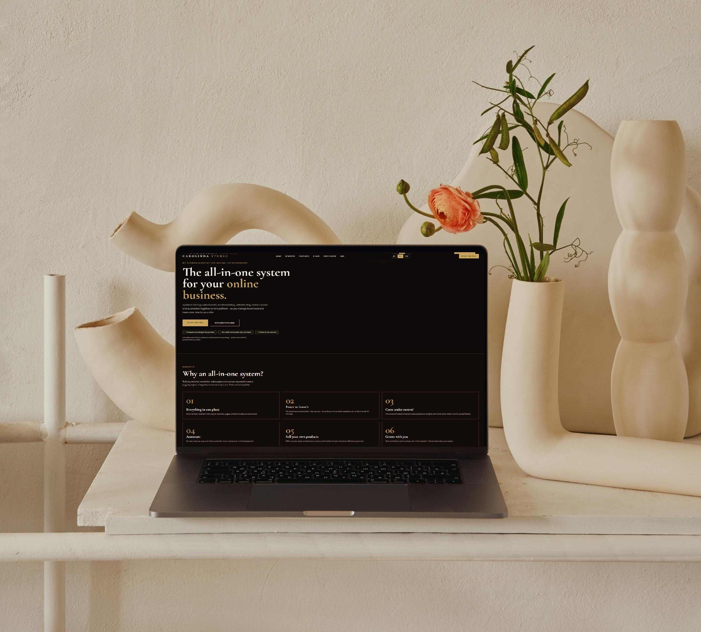

Das All-in-One-System für dein Online-Business.
systeme.io vereint Sales Funnels, E-Mail-Marketing, Website, Blog, Online-Kurse und Automatisierung in einer Plattform – damit du weniger Tools verwaltest und mehr Zeit für dein Angebot hast.
Angaben laut systeme.io. Limits und Konditionen können sich ändern – bitte vor dem Start beim Anbieter prüfen.
Warum ein All-in-One-System?
Wer Website, Newsletter, Verkaufsseiten und Kurse getrennt aufbaut, jongliert mit Logins, Schnittstellen und Abos. Das lässt sich vereinfachen.
Alles an einem Ort
Eine Oberfläche statt vieler Logins: Kontakte, Seiten, E-Mails und Verkäufe hängen zusammen.
Schneller live
Vorlagen und visueller Editor helfen beim Start. Laut Anbieter ist eine Website in unter 10 Minuten online.
Kosten im Blick
Ein Konto statt mehrerer Abos kann Verwaltung und Kosten vereinfachen.
Automatisieren
Anmeldung, Tags und Follow-up-E-Mails verbinden: wiederkehrende Aufgaben laufen im Hintergrund.
Eigene Produkte verkaufen
Kurse, digitale und physische Produkte anbieten und mit Partnern über ein Affiliate-Programm vermarkten.
Mit dir wachsen
Starte klein und wechsle bei Bedarf in einen größeren Tarif – ohne dein System neu aufzubauen.
Alle Bausteine im Überblick
Sales Funnels
Seitenfolgen für Anmeldung, Angebot und Verkauf mit bewährten Vorlagen. Ideal, wenn du Interessenten Schritt für Schritt zum Angebot führen willst.
E-Mail-Marketing
Kontaktliste aufbauen, Kampagnen und Newsletter senden. Laut Anbieter ist der Versand unbegrenzt; Kontaktlimits hängen vom Tarif ab.
Website & Blog
Seiten aus Vorlagen gestalten und Blogartikel veröffentlichen, um sichtbar zu werden und Besucher in Kontakte zu verwandeln.
Online-Kurse
Kurse mit Modulen und Lektionen aufbauen, Teilnehmer verwalten und Zugänge steuern – auch als Mitgliederbereich.
Automatisierung
Regeln und Abläufe, die auf Aktionen reagieren: Tags setzen, E-Mails auslösen, Kontakte in Kampagnen einordnen.
Evergreen-Webinare
Automatisierte Webinare, die zu jeder Zeit laufen, um Reichweite aufzubauen und Angebote zu präsentieren.
Partnerprogramm
Eigene Partner gewinnen, Links verwalten und Auszahlungen an einer Stelle organisieren.
Produkte verkaufen
Eigene digitale oder physische Produkte anbieten oder dich am Dropshipping orientieren – direkt mit deinen Verkaufsseiten verbunden.

Erst testen, dann wachsen.
Aktuell nennt systeme.io die Tarife Free, Startup, Webinar und Unlimited. Sie unterscheiden sich vor allem in Limits (z. B. Kontakte, Funnels, Kurse, Automatisierungen) und im Funktionsumfang. Preise ändern sich – maßgeblich ist die offizielle Tarifseite.
In drei Schritten zum ersten System
Konto erstellen
Über den Button auf dieser Seite registrieren und die Konditionen des kostenlosen Plans prüfen.
Ein Ziel wählen
Zum Beispiel Kontakte sammeln, ein Angebot verkaufen oder eine Website veröffentlichen.
Bauen und erweitern
Starte mit einer Vorlage, teste und ergänze nur, was du wirklich brauchst.
Gut geeignet für …
- Selbstständige und kleine Unternehmen
- Autorinnen, Autoren und Creator
- Coaches, Berater und Kursanbieter
- Alle, die digitale Produkte verkaufen wollen
Wann du genauer prüfen solltest
- Du brauchst sehr spezielle Integrationen, komplexe Teamrechte oder umfangreiche Shop-Funktionen.
- Du nutzt bereits andere Tools: Vergleiche Kosten, Datenumzug und den Aufwand eines Wechsels.
Häufige Fragen
Ist systeme.io kostenlos nutzbar?
Der Anbieter wirbt mit einem kostenlosen Plan, der bestimmte Limits hat. Prüfe auf der offiziellen Website, was aktuell enthalten ist.
Brauche ich eine Kreditkarte?
Laut Anbieter ist für den Start keine Kreditkarte nötig. Für kostenpflichtige Tarife gelten die Bedingungen im Bestellprozess.
Kann systeme.io meine bisherigen Tools ersetzen?
Das hängt von deinem Workflow ab. Die Plattform bündelt viele Funktionen, aber nicht jede Spezialfunktion anderer Tools. Vergleiche vor dem Wechsel.
Entstehen mir Mehrkosten, wenn ich deinen Link nutze?
Nein. Der Affiliate-Link ist ein Empfehlungslink; für dich entsteht kein Aufpreis. Es gelten die Preise und Bedingungen von systeme.io.
Garantiert systeme.io mehr Umsatz?
Nein. systeme.io ist ein Werkzeug. Der Erfolg hängt von Angebot, Zielgruppe und Umsetzung ab.